信号与系统笔记
英方信号，最死妈的一集
一些奇妙的信号函数
单位冲激信号
CT
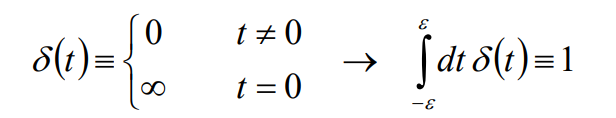
- 性质
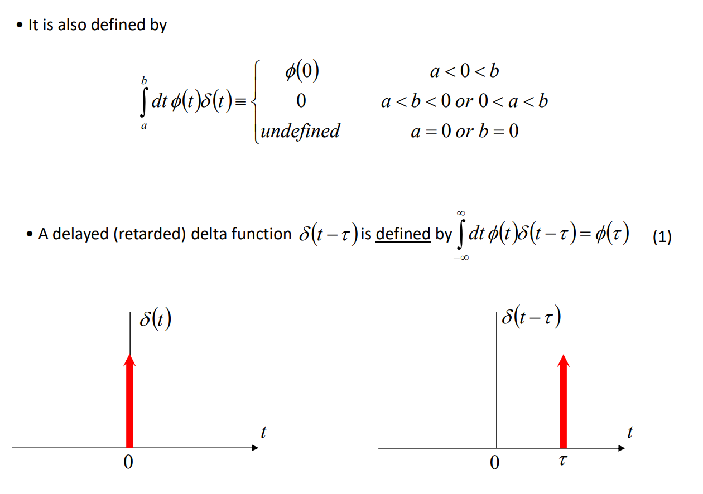
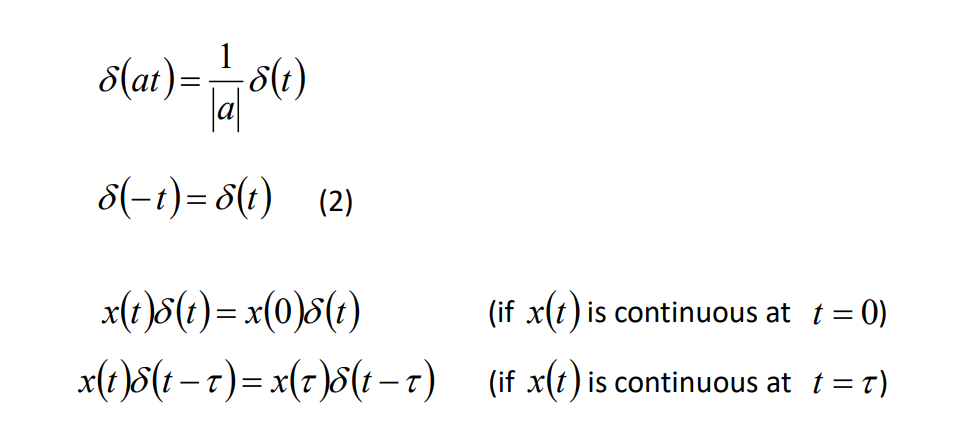
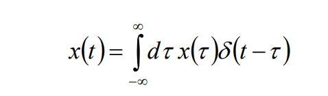
DT
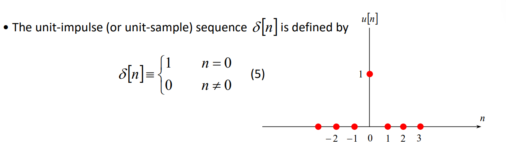
- 性质
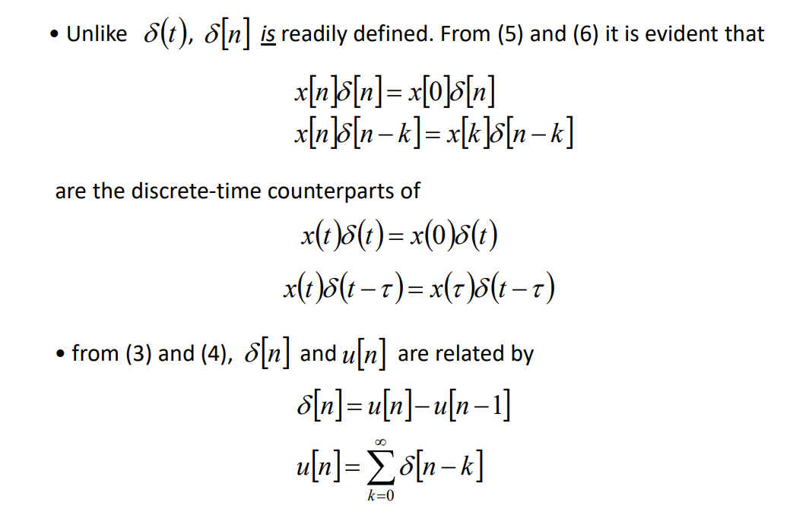
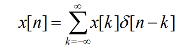
单位阶跃信号
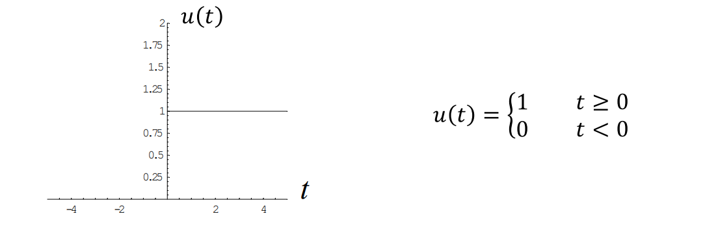
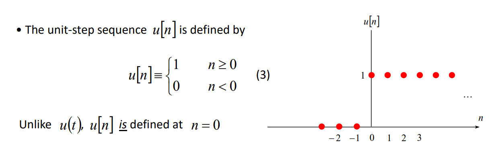
冲激响应
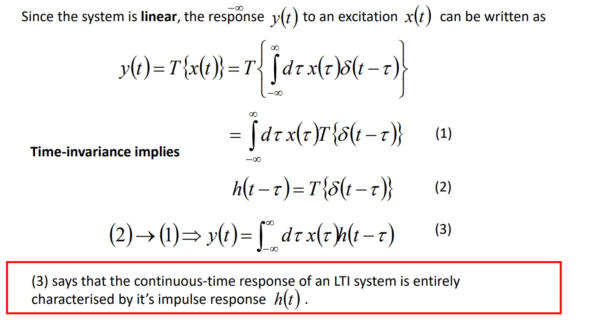
卷积代数
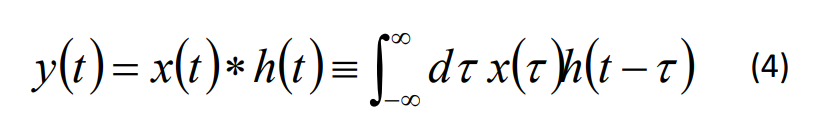
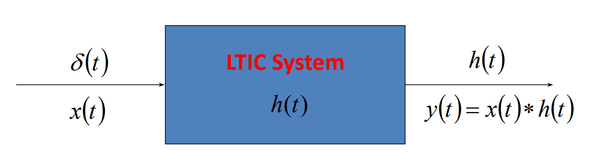
阶跃响应
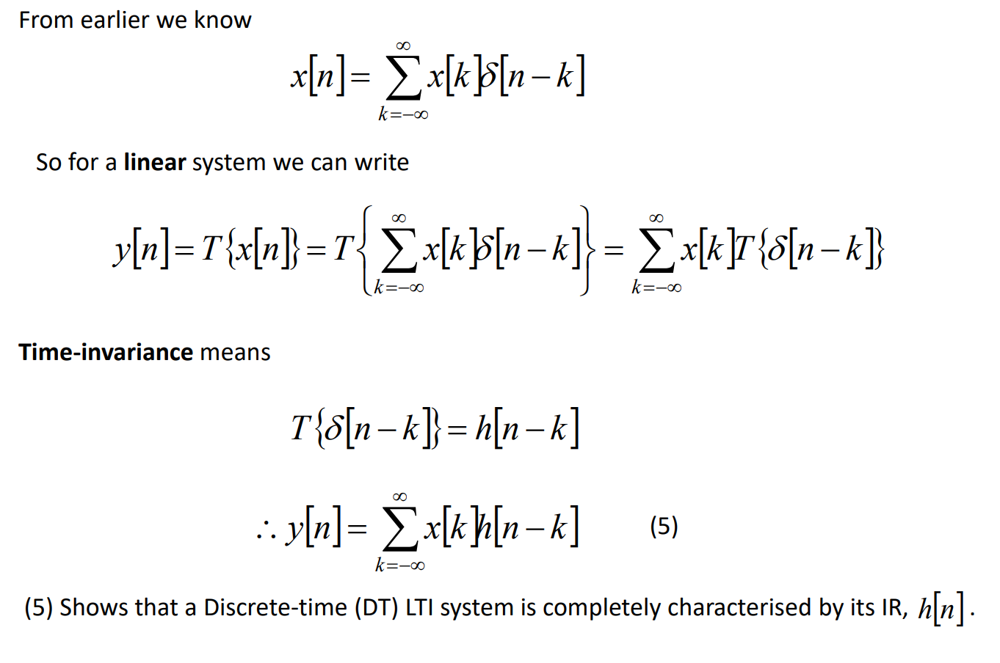
卷积和
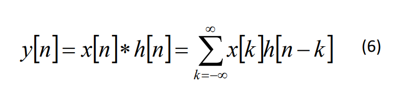
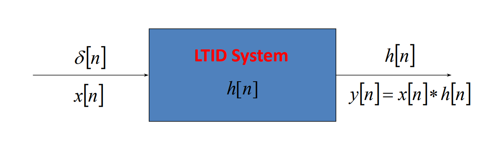
能量
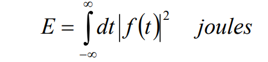
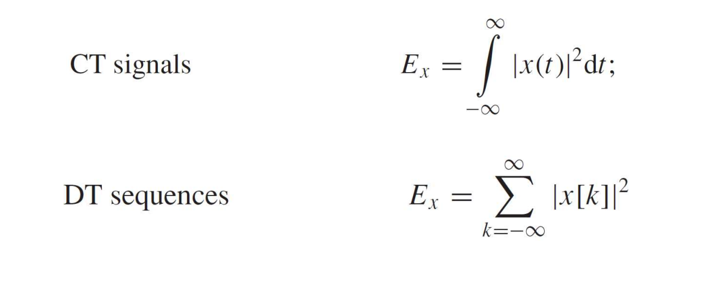
平均功率

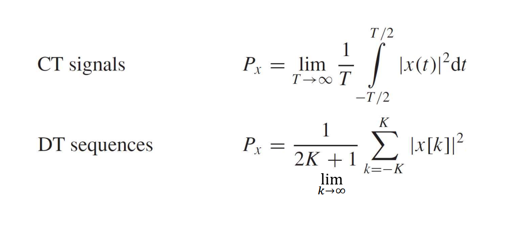
傅里叶变换
特性
线性
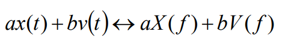
积分
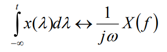
微分
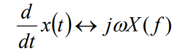
时移
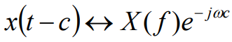
频移
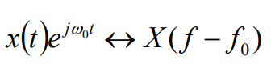
放缩
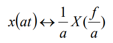
卷积定理
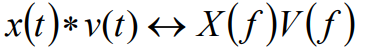
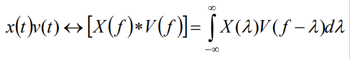
三角变换
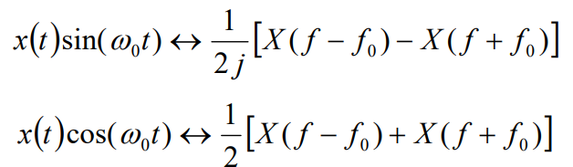
常用公式
三角恒等变换
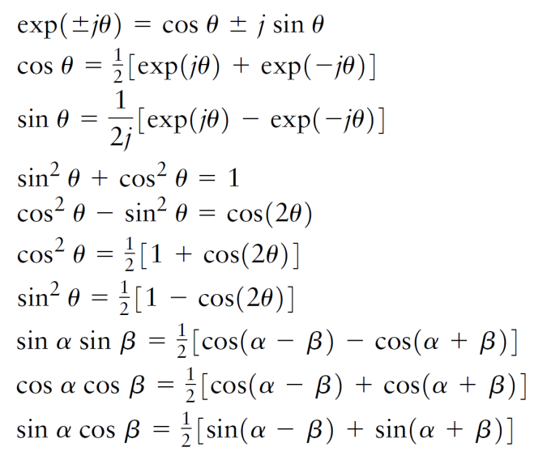
傅里叶变换
连续
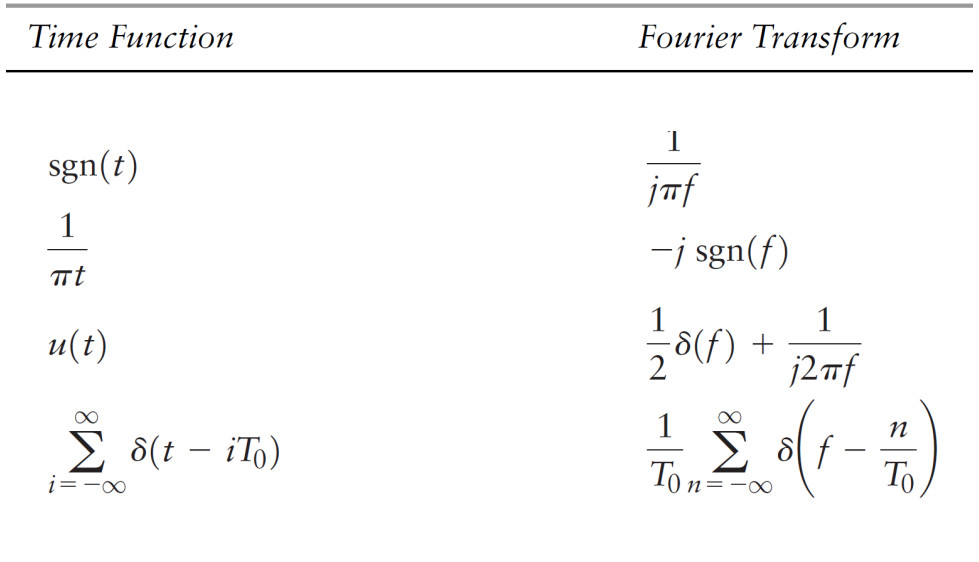
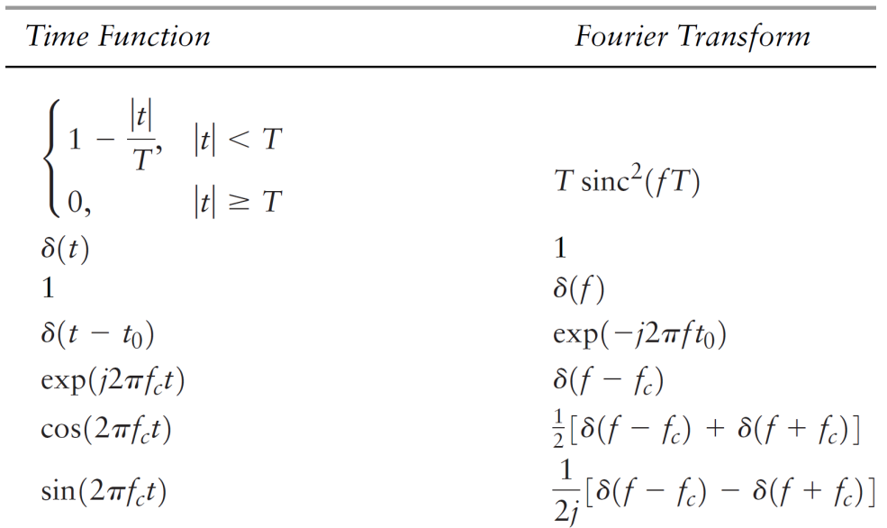
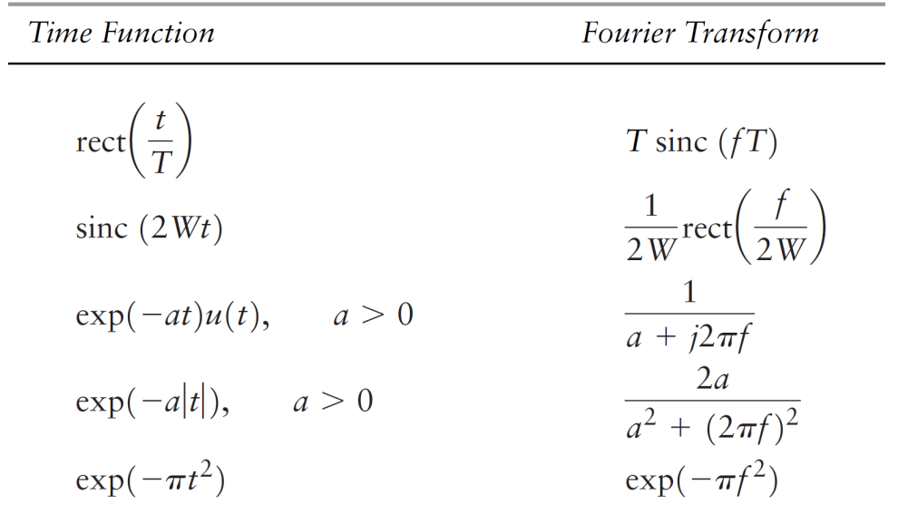
离散
抽样定理
信号与系统中的抽样定理，通常被称为奈奎斯特抽样定理（Nyquist Sampling Theorem），是信号处理领域的一个基本原理。这个定理解释了如何从连续时间信号（模拟信号）转换到离散时间信号（数字信号），而不丢失信息。以下是其核心要点：
- 抽样过程：抽样是将连续时间信号转换为离散时间信号的过程。这通常通过在规定的时间间隔内测量连续信号的值来完成
- 奈奎斯特率：抽样定理指出，为了能够无失真地从抽样信号重建原始的连续时间信号，抽样频率（即每秒钟的抽样次数）必须至少是信号最高频率成分的两倍。这个最小的抽样频率称为奈奎斯特率
- 重建：如果满足了抽样定理的条件，即抽样频率高于信号最高频率的两倍，那么可以通过一个理想的低通滤波器从抽样信号中完美重建原始连续信号
- 混叠现象：如果抽样频率低于奈奎斯特率，那么高频信号成分将与低频信号成分混叠，导致无法从抽样信号中准确重建原始信号。混叠是一个不可逆的信息损失过程
- 实际应用：在实际应用中，通常会采用稍高于奈奎斯特率的抽样频率来留出一定的安全边界，以确保信号可以被正确重建，尤其是考虑到实际滤波器并非理想状态
拉普拉斯变换
公式
本博客所有文章除特别声明外，均采用 CC BY-NC-SA 4.0 许可协议。转载请注明来自 VI0LET！